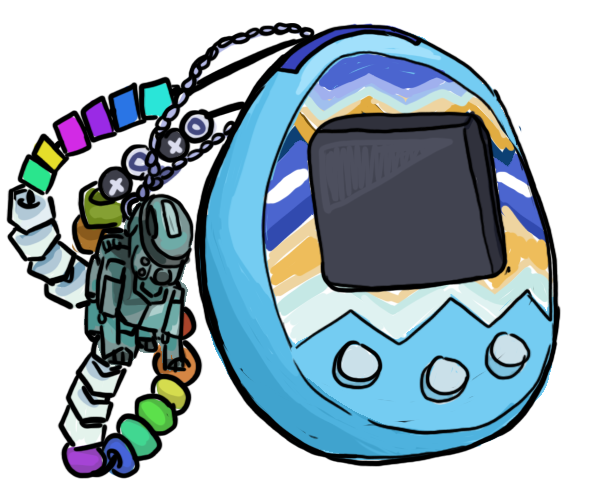
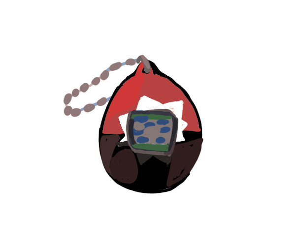

tamagotchi planet
My earliest self-cultivated interests were AIBO, Furby, and Tamagotchi. I wouldn't have physical access to these things for many many years, but things have changed!
This is my space on the web for consolidated information, hacks when I eventually create them, and growth logs, akin to the website that inspired all of this in the first place:
mimitchi.com.
current egg carton

Tamagotchi m!x
Thoroughly scuffed, but working perfectly despite! Japanese language and accompanied by two keychains. I purchased it in 2017 not too far after the launch of the m!x overseas. It's been run on and off throughout the years but is currently active.

Tamagotchi Mini
There isn't much to say about the mini beyond it being a nice acknowledgement on Bandai's part of the 20th anniversary, but it was quickly one-upped by the full-size relaunch of the original P1 and P2 Tamagotchi. Still, it's a cool keychain. English language.
in the fridge
Tamagotchi TamaTown and Tamagotchi Friends, both in pretty poor condition. They belong to my siblings.
wishlist
I'd love to purchase a Tamagotchi Meets （みーつ） so I can unlock all of the content on at least one device. (To unlock all of the content on both I'd have to get a third color tama, which is a slightly terrifyling prospect.) In my dreams, I own a P2, an Angelgotch or Morino, and a Connection.